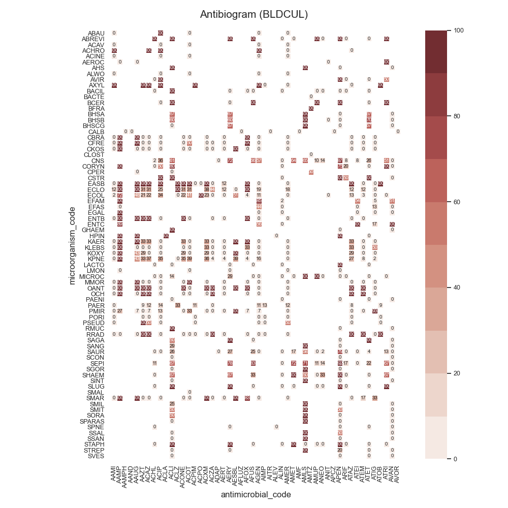
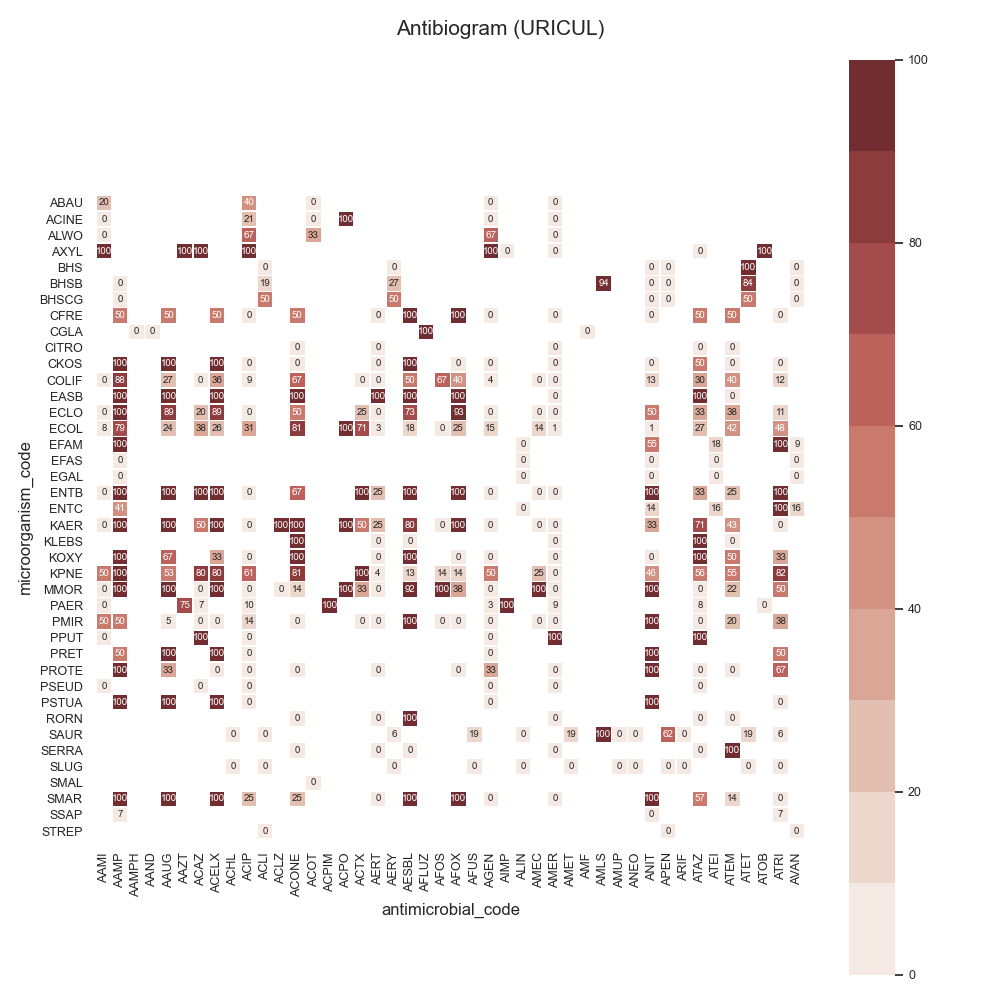

Note
Click here to download the full example code
SARI - Antibiogram (by culture)¶
Todo
Explain…
- 
- 
Out:
Data:
date_received date_outcome LastActDateODBC patient_id laboratory_number specimen_code ... reported sensitivity microorganism_genus microorganism_specie microorganism_gram_type antimicrobial_class
0 2020-04-24 18:09:00 2020-04-27 00:00:00 27/04/2020 0 F1394192 URNCUL ... Y sensitive coliform NaN NaN NaN
1 2020-04-24 18:09:00 2020-04-27 00:00:00 27/04/2020 0 F1394192 URNCUL ... Y sensitive coliform NaN NaN cephalosporins
2 2020-04-24 18:09:00 2020-04-27 00:00:00 27/04/2020 0 F1394192 URNCUL ... N sensitive coliform NaN NaN fluoroquinolones
3 2020-04-24 18:09:00 2020-04-27 00:00:00 27/04/2020 0 F1394192 URNCUL ... N sensitive coliform NaN NaN aminoglycosides
4 2020-04-24 18:09:00 2020-04-27 00:00:00 27/04/2020 0 F1394192 URNCUL ... Y sensitive coliform NaN NaN NaN
... ... ... ... ... ... ... ... ... ... ... ... ... ...
124640 2021-01-18 16:09:00 2021-01-22 00:00:00 2021-01-22 7785 X873071 CROCUL ... N NaN citrobacter NaN NaN meropenems
124641 2021-01-18 16:09:00 2021-01-22 00:00:00 2021-01-22 7785 X873071 CROCUL ... N NaN citrobacter NaN NaN NaN
124642 2021-01-18 16:09:00 2021-01-22 00:00:00 2021-01-22 7785 X873071 CROCUL ... N NaN citrobacter NaN NaN penicillins
124643 2021-01-18 16:09:00 2021-01-22 00:00:00 2021-01-22 7785 X873071 CROCUL ... N NaN citrobacter NaN NaN NaN
124644 2021-01-18 16:09:00 2021-01-22 00:00:00 2021-01-22 7785 X873071 CROCUL ... N NaN citrobacter NaN NaN aminoglycosides
[124645 rows x 22 columns]
Columns:
Index(['date_received', 'date_outcome', 'LastActDateODBC', 'patient_id', 'laboratory_number', 'specimen_code', 'specimen_name', 'specimen_description', 'microorganism_piece_counter', 'microorganism_code', 'microorganism_name', 'antimicrobial_code', 'antimicrobial_name', 'sensitivity_method',
'sensitivity_code', 'mic', 'reported', 'sensitivity', 'microorganism_genus', 'microorganism_specie', 'microorganism_gram_type', 'antimicrobial_class'],
dtype='object')
9 10 11 12 13 14 15 16 17 18 19 20 21 22 23 24 25 26 27 28 29 30 31 32 33 34 35 36 37 38 39 40 41 42 43 44 45 46 47 48 49 50 51 52 53 54 55 56 57 58 59 60 61 62 63 64 65 66 67 68 69 70 71 72 73 74 75 76 77 78 79 80 81 82 83 84 85 86 87 88 89 90 91 92 93 94 95 96 97 98 99 100 101 102 103 104 105 106 107 108 109 110 111 112 113 114 115 116 117 118 119 120 121 122 123 124 125 126 127 128 129 130 131 132 133 134 135 136 137 138 139 140 141 142 143 144 145 146 147 148 149 150 151 152 153 154 155 156 157 158 | # Libraries
import sys
import numpy as np
import pandas as pd
import seaborn as sns
import matplotlib as mpl
import matplotlib.pyplot as plt
# Import specific libraries
from pyamr.core.sari import SARI
from pyamr.core.freq import Frequency
from pyamr.datasets.load import make_susceptibility
# -------------------------
# Configuration
# -------------------------
# Configure seaborn style (context=talk)
sns.set(style="white")
# Set matplotlib
mpl.rcParams['xtick.labelsize'] = 9
mpl.rcParams['ytick.labelsize'] = 9
mpl.rcParams['axes.titlesize'] = 11
mpl.rcParams['legend.fontsize'] = 9
# Pandas configuration
pd.set_option('display.max_colwidth', 40)
pd.set_option('display.width', 300)
pd.set_option('display.precision', 4)
# Numpy configuration
np.set_printoptions(precision=2)
# ------------------
# Methods
# ------------------
def get_category_colors(index, category, cmap='tab10'):
"""This method creates the colors for the different elements in
categorical feature vector.
Parameters
----------
values : array-like
The vector with the categorical values
cmap: string-like
The colormap to use
default: string-like
The color to be used for the first value. Note that this
value needs to appear first on the the sorted list, as such
it is recommended to set is as _default.
Returns
-------
"""
# Get categories
categories = index.get_level_values(category)
# Get unique elements
unique = np.unique(categories)
# Create the palette
palette = sns.color_palette(cmap, desat=0.5, n_colors=unique.shape[0])
# Create mappers from category to color
mapper = dict(zip(map(str, unique), palette))
# Create list with colors for each category
colors = pd.Series(categories, index=index).map(mapper)
# Return
return colors
# -------------------------------------------
# Load data
# -------------------------------------------
# Load data
data = make_susceptibility()
# Show
print("\nData:")
print(data)
print("\nColumns:")
print(data.columns)
# -------------------------------------------
# For each culture type
# -------------------------------------------
# Count records per order code
specimen_code_count = data.specimen_code.value_counts()
# Filter most frequent order codes
data = data[data.specimen_code.isin( \
specimen_code_count.index.values[:5])]
# Loop
for specimen_code, df in data.groupby(by='specimen_code'):
# -------------------------------------------
# Compute Freq and SARI
# -------------------------------------------
# Create instance
freq = Frequency(column_antibiotic='antimicrobial_code',
column_organism='microorganism_code',
column_date='date_received',
column_outcome='sensitivity')
# Compute frequencies (overall)
freq_overall = freq.compute(df, by_category='pairs')
# Compute SARI
sari_overall = SARI(strategy='hard').compute(freq_overall)
# ------------
# Plot Heatmap
# ------------
# Create matrix
matrix = sari_overall[['sari']]
matrix = matrix.unstack() * 100
matrix.columns = matrix.columns.droplevel()
# Create figure
f, ax = plt.subplots(1, 1, figsize=(8,8))
# Create colormap
cmap = sns.color_palette("Reds", desat=0.5, n_colors=10)
# Specify cbar axes
#cbar_ax = f.add_axes([.925, .3, .05, .3])
# Plot
ax = sns.heatmap(data=matrix, annot=True, fmt=".0f",
annot_kws={'fontsize': 7}, cmap=cmap,
linewidth=0.5, vmin=0, vmax=100, ax=ax,
xticklabels=1, yticklabels=1)
# cbar_ax=cbar_ax)
# Configure axes
ax.set(aspect="equal")
# Set rotation
plt.yticks(rotation=0)
# Add title
plt.suptitle("Antibiogram (%s)" % specimen_code,
fontsize=15)
# Tight layout
plt.tight_layout()
#plt.subplots_adjust(right=0.91)
# Show
plt.show()
|
Total running time of the script: ( 0 minutes 9.140 seconds)